「忠孝東路走九遍」是許多人熟悉的歌詞，也是一整個世代的東區記憶。這場城市散步由長年觀察台北飲食與城市文化的 Hally Chen 帶路：他國中就讀懷生國中，看著第一家 SOGO 從打地基到落成；退伍後在忠孝東路四段巷內開設唱片美術設計工作室，在這裡工作了二十多年、做過約上千張唱片封面。
他一手拿著平板，在每個路口對照老地圖與老照片，從早年的農地、水圳與眷村，到 1970 年代後的快速都市化，再到 1990 年代百貨、餐廳、咖啡館與流行文化匯聚的黃金時期，講的是東區的變化，也是他自己的青春。
故事節點
懷生國中、遠東 SOGO 百貨台北忠孝館、頂好名店城、仁愛圓環、國泰世華銀行仁愛分行（誠品舊址）
活動形式
走讀 × 交流（約 2–2.5 小時）＋ 共創 × 分享：在回饋卡上畫下印象最深的畫面，聊聊一路上的觀察（約 1 小時）
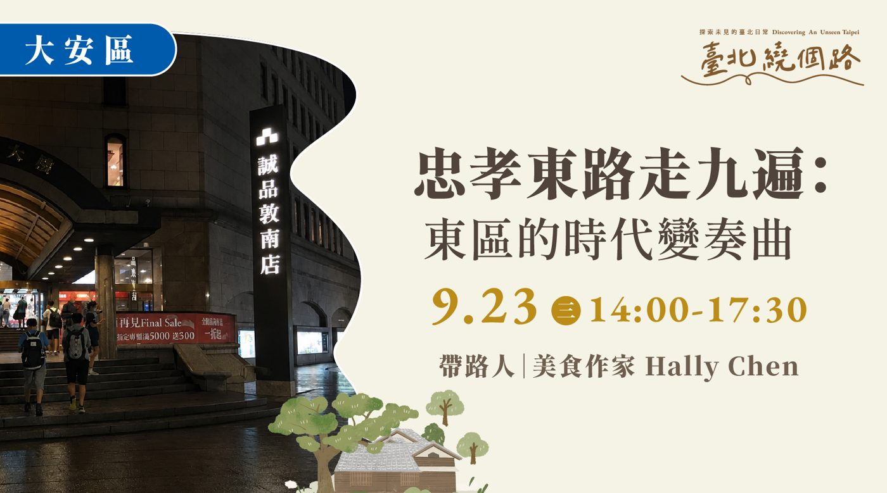
第 1 站
出發：最年輕的大馬路
SOGO 忠孝館轉角｜約 14:05
- 忠孝、仁愛、信義、和平、南京這幾條東區大馬路中，忠孝東路是最後開的：1970 年 7 月起才把原本的小路拓寬成大馬路。1957 年的地圖上，四段這一帶還看不到這條路。
- 名稱由來：以前的「中正路」是今天忠孝東路一、二段到華山再轉進今八德路的那一段。後來八德路那段改名，前段拓寬成為忠孝東路。坊間另有一說：總統之尊「不可分段」，所以才改名——Hally說這只能當笑話聽。士林的中正路當年歸陽明山管理局管，所以沒被改到。
- 開通不過二十年，九〇年代的流行歌就已把它寫進歌詞（例如動力火車〈忠孝東路走九遍〉），成了台北繁榮的代名詞。
- 消失的河：地圖上的藍線都是昔日水道。安東街以前是一條河，有人在河邊洗衣洗菜，加蓋後成了綠地；SOGO 後方的瑠公公園就是為紀念這條水道而命名，水路一路穿到安和路。東區棋盤路網中突然出現的斜路，多半是河道加蓋留下的痕跡；新生高架橋下也曾是大圳。
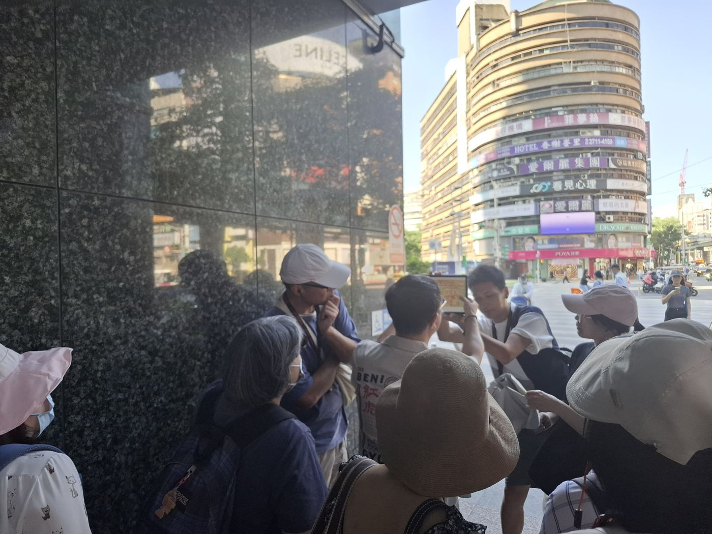
第 2 站
眷村巷弄與流動的台北
SOGO 後方巷弄｜約 14:15
- 這一帶過去多是眷村住戶。以前巷內一樓都是住宅，這十幾年隨著百貨開發與都更才陸續改成店面。
- Hally讀國中時還沒有百貨公司、也沒有捷運，同學多住附近。左手邊原有一棟空軍的活動中心，許多喜宴與活動都在那裡辦，後來拆掉改建大樓。
- 台北是一座流動的城市：父母那一代努力來到台北打拼，退休後又把房子賣掉、搬到外縣市換大一點、不用爬樓梯的房子——同樣是為了生活。老同學如今一大半已不住台北。
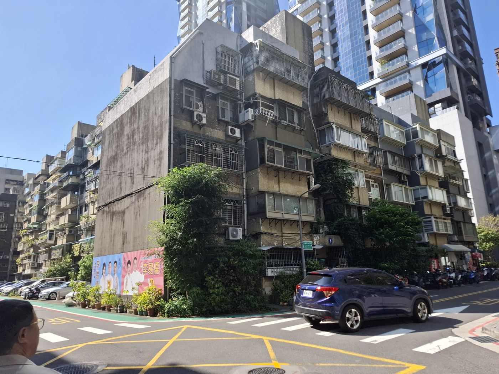
第 3 站
八德路：清代就有的官道
往懷生國中途中｜約 14:20
- 對照 1895 年與 1904 年的地圖：畫綠線的就是今天八德路的前身，清代的官道，把基隆、宜蘭方向的貨物一路送到東門，是台北最老的道路之一。
- 為什麼送到東門？因為當時只有台北城內才算官方管理的地方，東門以外都是荒郊，一兩百年前的東區還在開墾中。
- 老地圖上的鐵道就是今天的市民大道（高架橋）位置，拿來當地標很好認。
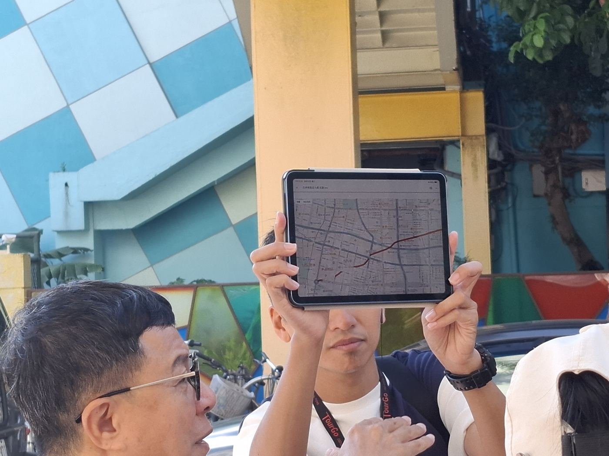
第 4 站
空軍總部、正義新村與懷生國中
懷生國中校門前｜約 14:21–14:35
- 空軍總司令部舊址：原為日治時期台灣總督府工業研究所，1949 年由國防部接收為空軍總司令部，稱「仁愛營區」；2012 年營區遷往大直後，轉型為社會創新基地，2024 年升格為國定古蹟。旁邊是當年的眷舍正義新村。
- 懷生國中：1949 年成立台北空軍子弟學校，為紀念空軍烈士陳懷生，1967 年更名懷生國小。陳懷生是「黑貓中隊」成員，駕駛 U-2 高空偵察機（約兩萬公尺高空、在衛星攝影普及前執行空拍任務），在任務中遭擊落殉職。1969 年國小遷到安東街，原址擴建為懷生國中，1970 年新校舍啟用。
- 空軍總部、宿舍、學校、托兒所集中在一起，是時代背景使然：情勢緊張時，軍人半夜也能立刻趕回單位。
- 台灣第一面跆拳道金牌：秦玉芳是懷生國中校友（Hally的學姊），在漢城奧運跆拳道示範項目拿下女子 43 公斤級金牌，當年的道館就在學校旁邊。
- 忠孝東路雖然 1970 年後才開，其實日治時期（1932 年市區計畫圖）就已規劃好。後來的仁愛路、南京東路也都是把當年未完成的計畫補完——因為規劃有道理：要連接松山車站、港口與台北城。
想看自家附近五十年前的樣子？可以用這兩個老地圖對照網站：
台北歷史對照地圖
中研院百年歷史地圖 1957 年臺北市街道圖
台北歷史對照地圖
imdataman.github.io/taipei-map-1957中研院百年歷史地圖 1957 年臺北市街道圖
gis.sinica.edu.tw/showwmts/index.php?s=taipei&l=Taipei_1957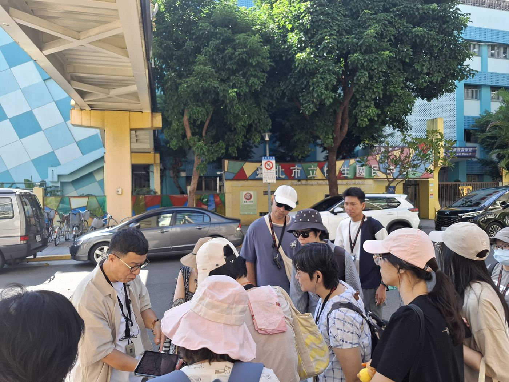
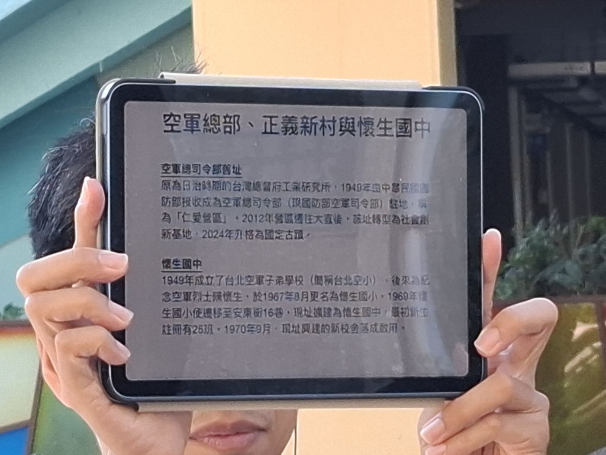
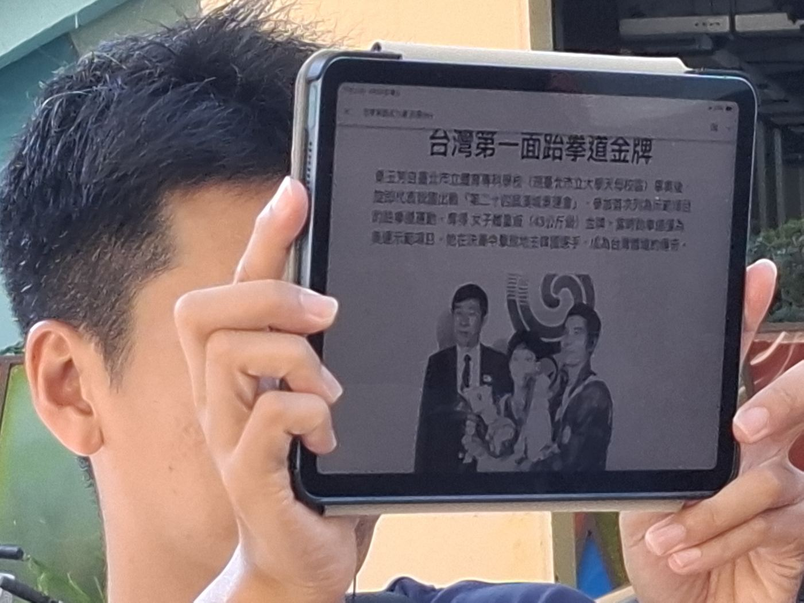
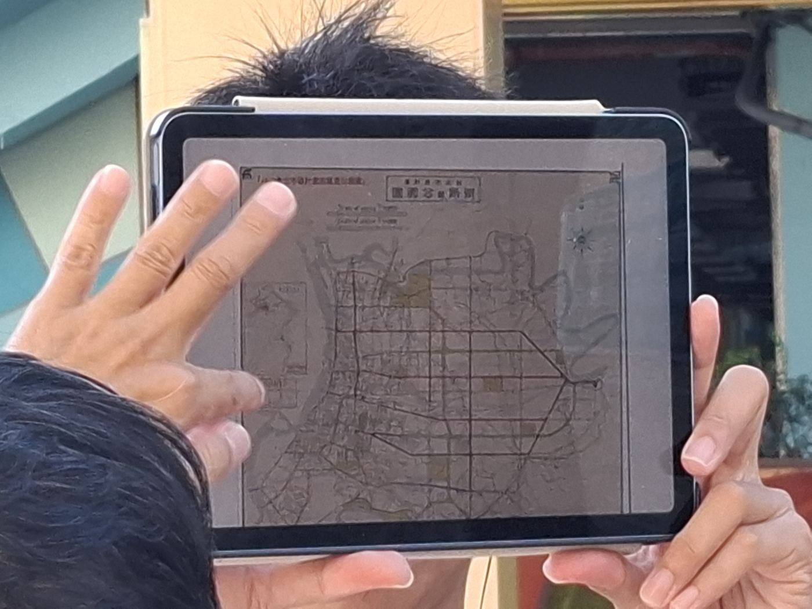
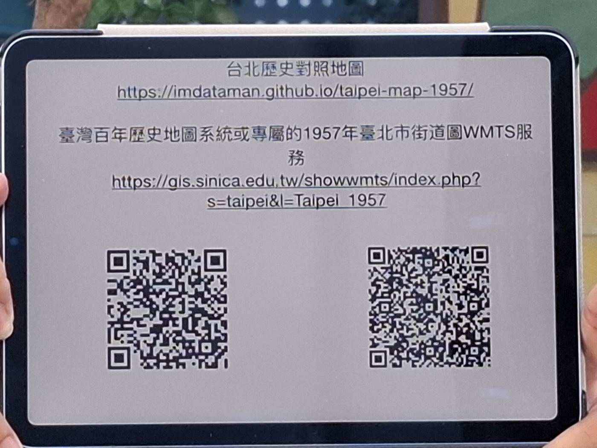
第 5 站
台灣第一條捷運、消失的小店
忠孝東路四段・往 SOGO｜約 14:36–14:44
- 頭頂的木柵線（今文湖線）是台北第一條通車的捷運（1996 年）。當年與原廠商法國馬特拉公司鬧翻、對方不願提供後續維修，最後由我們自己撐起來，一路運作到今天。
- 斜對面的永豐銀行，前身是台北區中小企銀；Hally 1996 年創業時的第一個公司帳戶就開在這裡。
- 空軍總部轉型後，附近巷子開了不少咖啡店。但房租一調整，小店最容易消失——這是城市餐飲業的共同難題。
第 6 站
瑠公圳碑與 SOGO 的誕生
SOGO 忠孝館前的紀念碑｜約 14:44–14:55
- SOGO 旁這塊碑多數人走過都沒注意：這片土地原屬瑠公，如今是農田水利會的財產，以租約方式租給太平洋建設，期限 1983 年至 2033 年，再過幾年就到期。附近還有不少土地屬水利會所有。
- 1987 年，第一家太平洋 SOGO 百貨在這裡開幕。太平洋建設創辦人章民強早年在大陸工程任職，據《天下雜誌》報導，他把台北地圖攤開，從東到西、從北到南各畫一條線，交叉點正好落在忠孝東路與敦化南路口，於是開始集資買地。
- 對照老照片：開發前這裡是一片平房與兩層樓建築，只有一條小路；今天巷口一樓是星巴克的那兩棟大樓，至今沒變。1958、1973、1991、2013 年的空照圖並列，五十年的變化一目了然。
- 2000 年前後受金融風暴等因素影響，SOGO 易主，現屬遠東集團。
- 2001 年納莉颱風：9 月 17 日豪雨讓東區大淹水，水從 SOGO 地下樓層等多處灌進捷運站，短短數十分鐘就淹滿。現在忠孝復興站內還畫有當年的淹水線。
- Hally的工作室就在斜對面。唱片圈全盛時，客戶常晚上十點後才來看稿，改到清晨四點發稿是常態，印刷廠業務就睡在沙發上等稿；那也是台北人最不睡覺的年代。
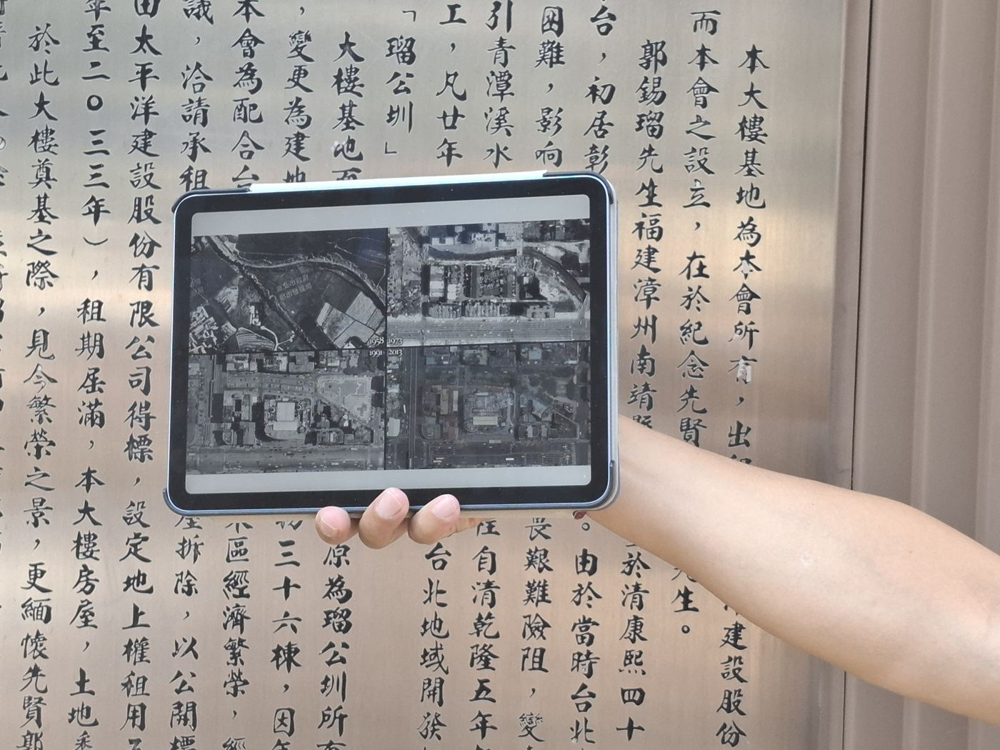
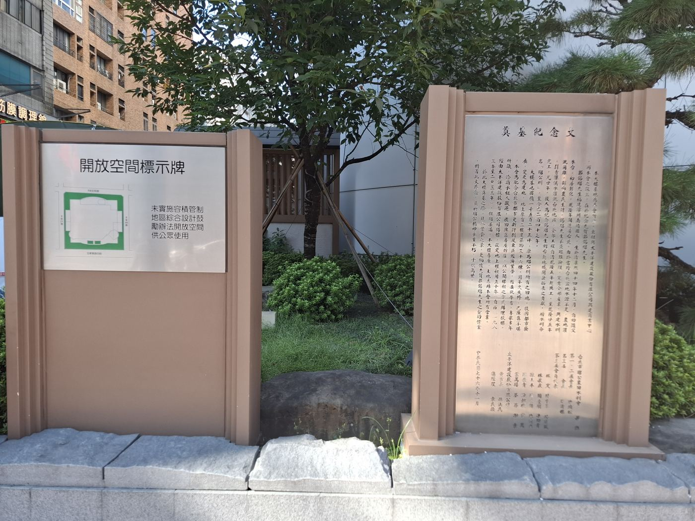
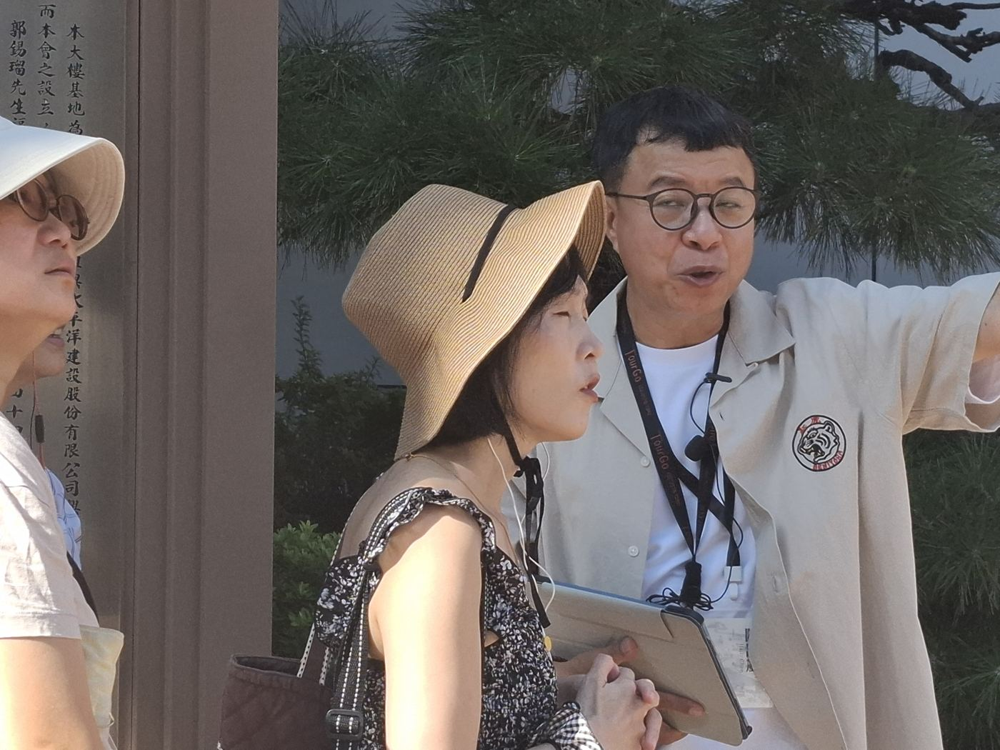
第 7 站
頂好名店城與龍門商場
忠孝東路四段・大安路口一帶｜約 14:57–15:15
- 眼前的香檳大廈（頂好名店城）同樣是太平洋建設所建，1971 年 9 月 1 日竣工，比 SOGO 還早。裡面的頂好超市據說是第一家提供購物推車的超市，還有保齡球館、咖啡廳，是七、八〇年代電影常取景的時髦地標；後來被香港惠康併購，才有「頂好惠康」這個名字。
- 左邊香檳大廈、右邊漢宮大廈、後面龍門大廈（龍門商場），在地人都直接叫大樓名稱。建築都沒變，只是拉皮過。龍門二樓曾有淘兒唱片（Tower Records），是早年少數買得到歐美原文音樂雜誌的地方。
- 老照片裡，河道從這裡流過，今天斑馬線的位置當年是一座橋。下次過斑馬線時，想像腳下五十年前是一條河。
- 老照片中的黑松汽水廣告牆至今仍在。黑松汽水廠舊址就在附近，是老一輩的大地標。
- 1987 年 SOGO 開幕，肯德基也同年進駐，東區的繁華從那時正式起飛。Hally說，十三年就足以讓人忘記一個地方原本的樣子。
- 美食口袋名單：頂好名店城地下室的頂好紫琳蒸餃（素蒸餃、鍋貼，隨時都在排隊），隔壁原本還有一家小火鍋，生意好到老闆搬上樓獨立開店。
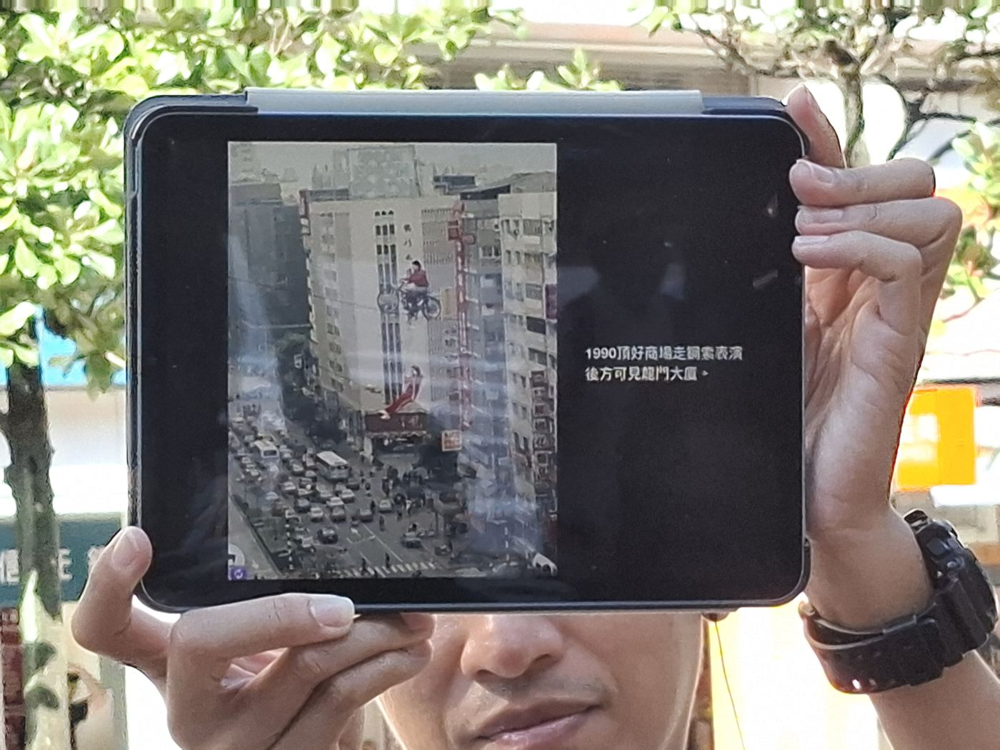
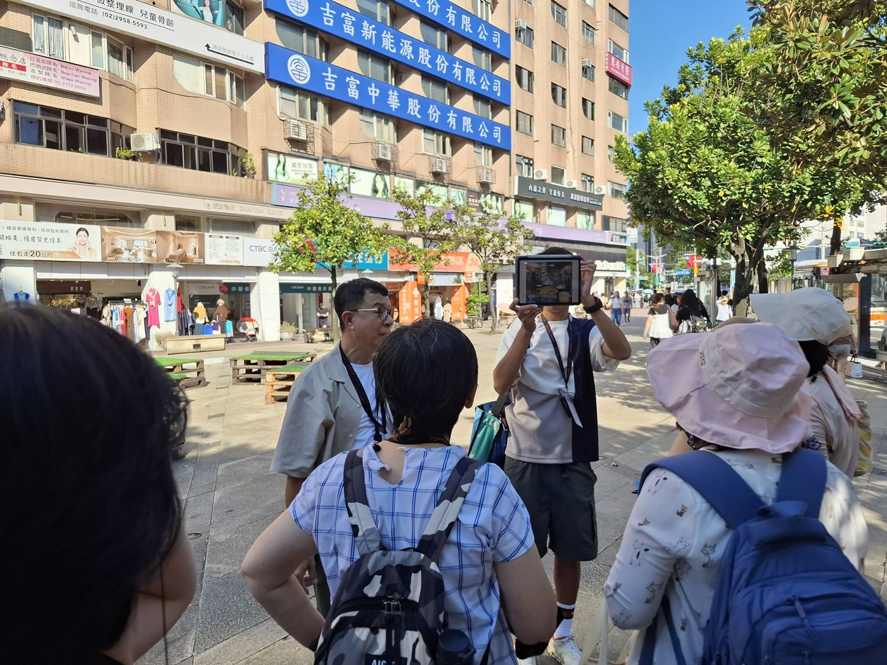
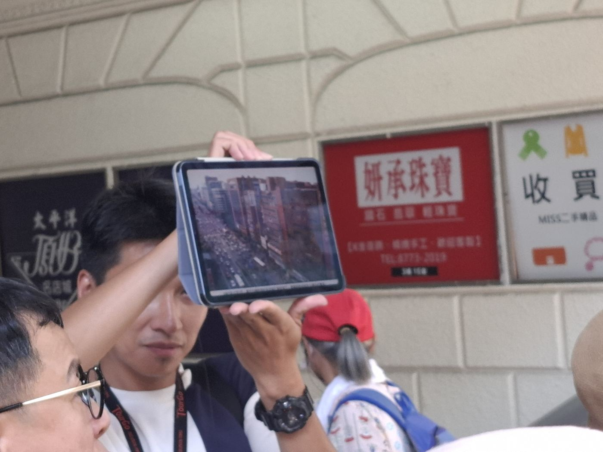
第 8 站
光武新邨：太平洋建設的起點
巷內老公寓｜約 15:15–15:20
- 由大陸工程於民國 54 年（1965 年）開發，是台灣最早引進多層式連棟公寓的大規模代表作之一。建築師兼工地主任是知名建築師沈祖海，工地會計就是後來的太平洋建設創辦人章民強。
- 基地約 866 坪，分 A、B 兩區、共 72 戶，每戶約 30 坪。因屋齡老舊，2010 年起由安信建經與精耕建設推動都更，這幾年仍在協商中。
- 章民強一家當年就住在這裡，方便就近管理收購土地與工地。沿路看下來的許多大樓都出自太平洋建設，起點就在這裡。
- 五〇年代台灣多是平房與兩層樓建築，到七〇年代才流行這種西式公寓。牆上「光武新邨」的字已經看不太清楚了。
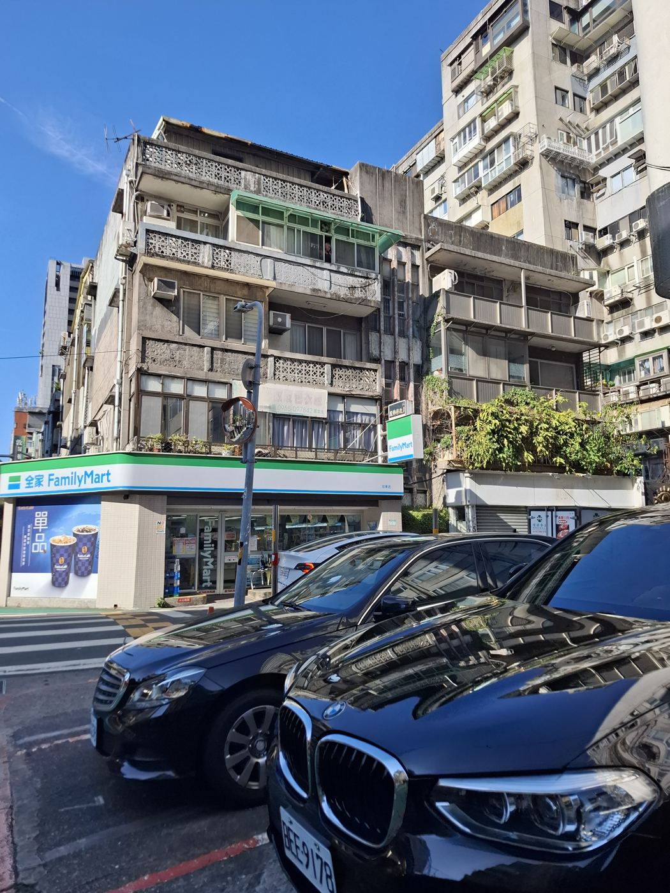
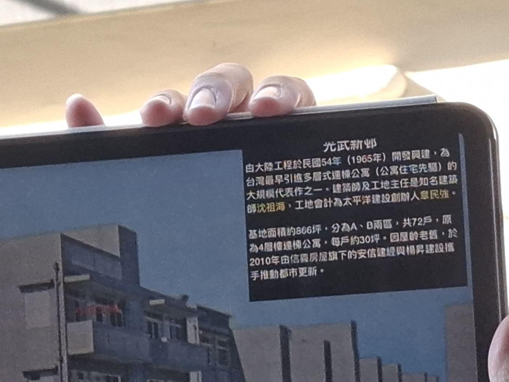
第 9 站
復旦橋與國門大道
忠孝東路・敦化路口｜約 15:21–15:25
- 腳下這個路口往北，以前有一座復旦橋，用來跨越鐵道。1959 年 2 月 8 日，復旦橋與仁愛路三、四段一起剪綵通車。照片中當時四周一片空曠。
- 鐵路地下化後，橋在九〇年代初拆除，前後只用了約三十年——城市進步得太快。
- 敦化北路在 1956 年就開成六線道大馬路，因為松山機場是當時唯一的國際機場。外賓從機場出來，沿敦化北路到仁愛路圓環右轉，再沿仁愛路直通總統府；沿途種椰子樹、設噴水池，全是為了國門門面。當時圓環以南的敦化南路還沒開。
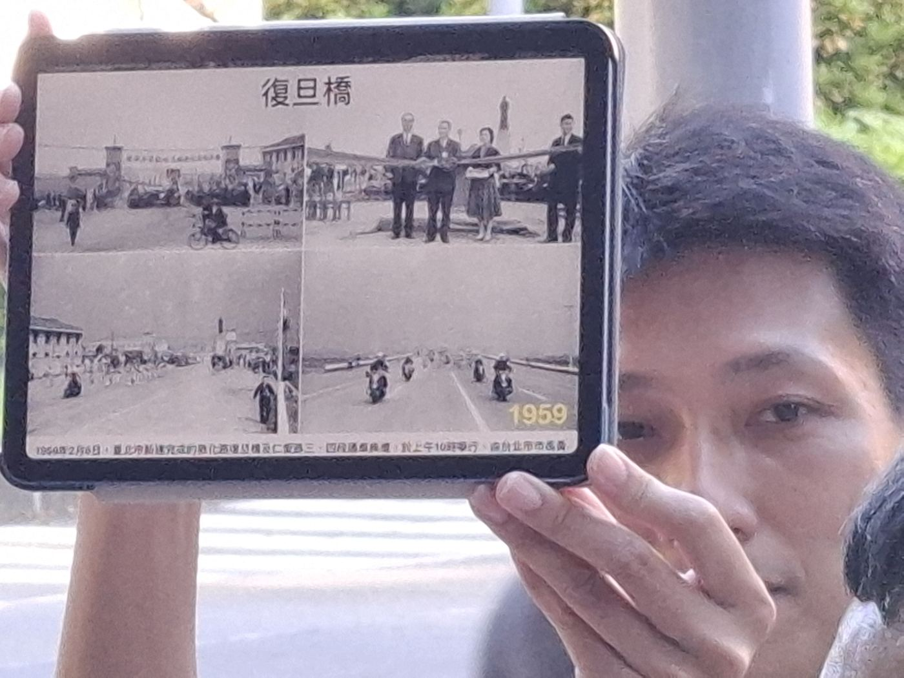
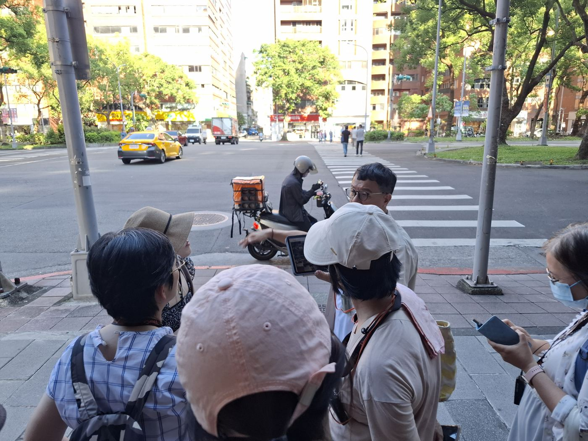
第 10 站
順成蛋糕與安樂大樓
敦化南路口｜約 15:25–15:30
- 當年馬路開闢後，沿路地主還得繳「道路受益費」，有大樓前後就被徵收了三次。照片中可見 1993 年捷運施工時的順成麵包。
- 安樂大樓剛蓋好時一樓有庭院和欄杆，車子可以開進去停，後來被徵收成人行道。1972 年的彩色照片裡，那時的建築現在看來仍然很時髦。
- 大樓外觀變化的原因之一，是台灣曾流行把陽台外推；後來很多人後悔，因為陽台通風好、住起來舒服，現在的豪宅反而陽台都很大。
- 順成蛋糕歷史悠久，生意始終很好。有一款綁著紅緞帶的泰迪熊造型麵包，現在只在聖誕節前夕才做。2000 年前後誠品敦南 24 小時營業，二樓的港式飲茶也跟著熱鬧。
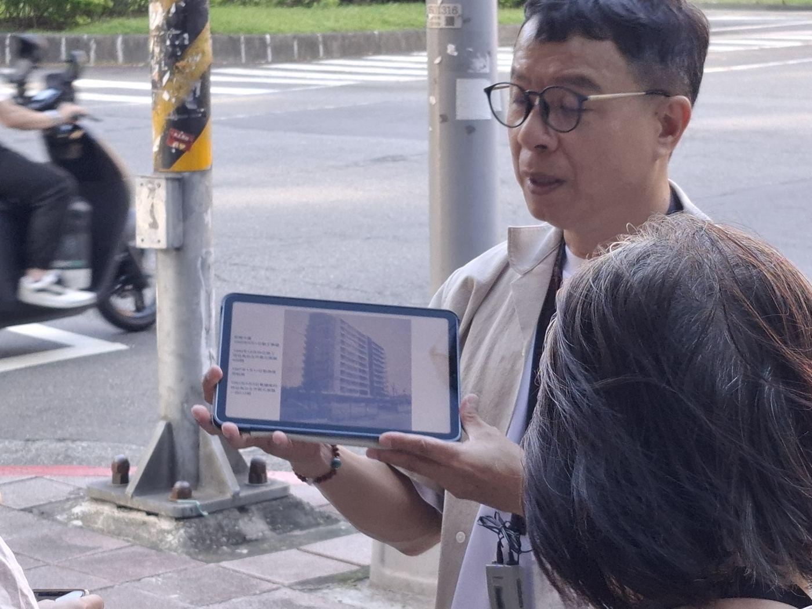
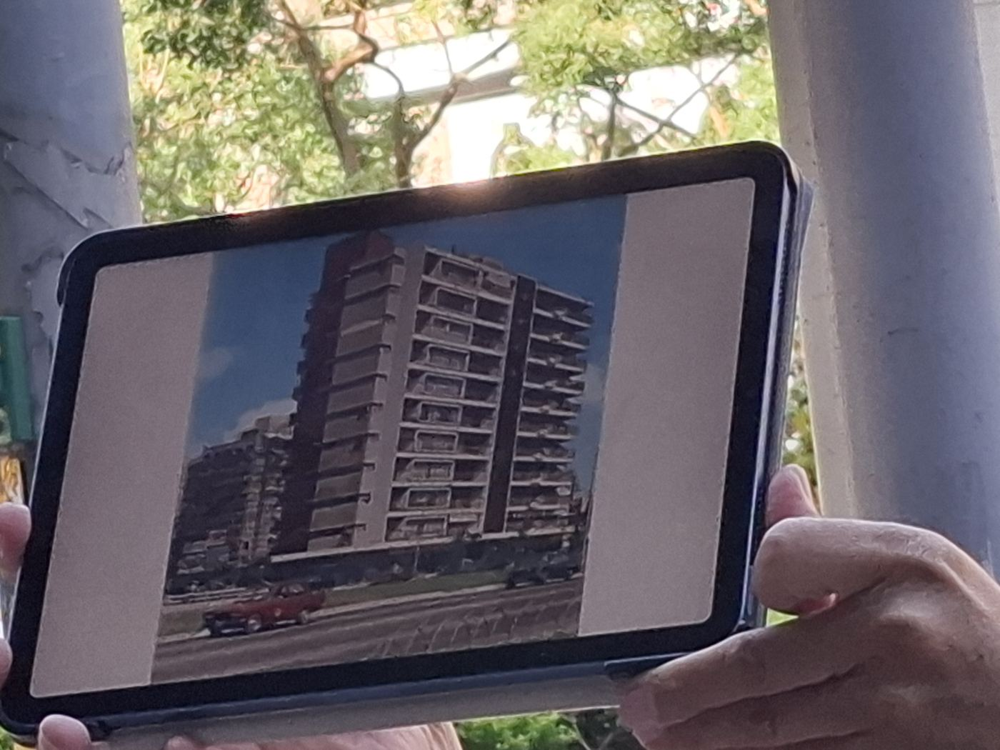
第 11 站
仁愛保齡球館、SOGO 敦南店
忠孝東路・敦化南路口｜約 15:30–15:40
- 眼前閒置的 SOGO 敦南店，前身是仁愛保齡球館（三層樓），1971 年開幕——忠孝東路一開發，大家都看到了商機。旁邊的空地是仁愛游泳池，與東門游泳池同為當年小朋友印象最深的公立泳池。
- 演變：1986 年成為東王西餐廳大型秀場 → 1988 年永琦百貨 → 1994 年 SOGO 接手為敦南店 → 太平洋建設 2002 年發生財務危機 → 2025 年結束營業，原本要改建，後來停工閒置。
- 復興中小學：日治時期原屬愛國婦人會，戰後由陳儀夫人接手辦幼稚園，1949 年婦聯會成立後改名復興幼稚園，1954 年向省政府取得土地建校。
延伸散步：想找這一區比較有歷史的廟，可以到國泰醫院後方巷子底的火神廟。延吉街、信義路口一帶早年是木炭批發地，因此奉祀火神。東區一百年前多是河和農地，老廟不多。
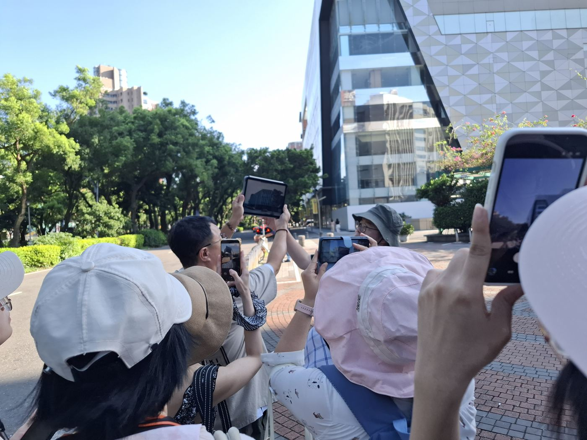
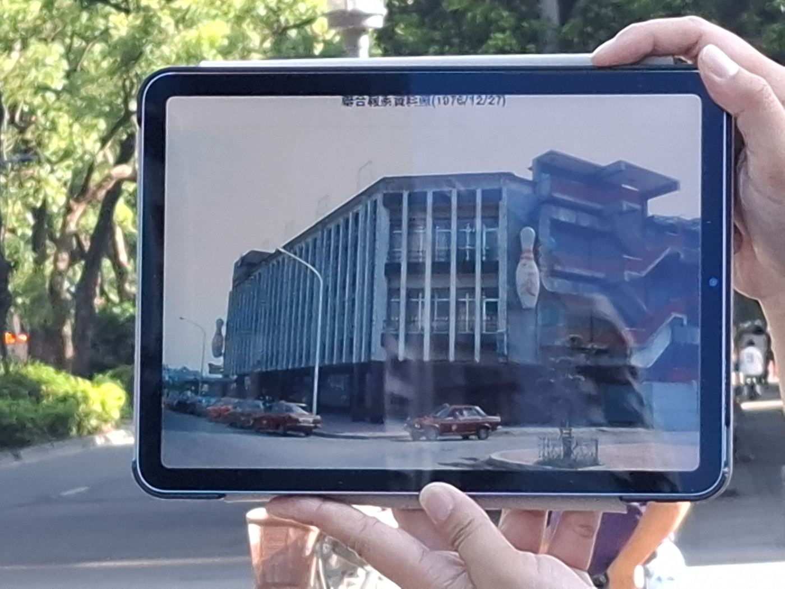
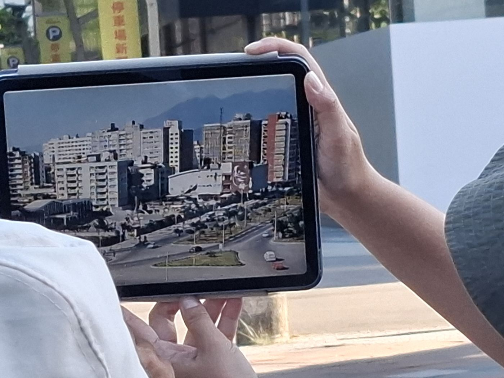
第 12 站
仁愛路與財神酒店的故事
仁愛路・敦化南路圓環｜約 15:40–15:48
- 仁愛路在 1956 年以美援經費開闢，比忠孝東路早得多。1960 年的照片中旁邊還沒有醫院，幾乎什麼都沒有；1972 年才漸漸熱鬧起來。
- 對面的圓柱形台新大樓，前身是財神酒店，八〇年代初是國賓來台下榻的頂級飯店。它把套房分售給三、四百位業主，原以為是創新，結果一出問題就難以收拾：先是財務危機，接手的鴻源集團又爆發違法吸金案，產權複雜到難以處理，最後才由台新金控透過都更重建。
- Hally高一暑假曾在這附近的百貨四樓打工，推著台車做了一個月——不是為了錢，是覺得打工很酷，結果累到不行。
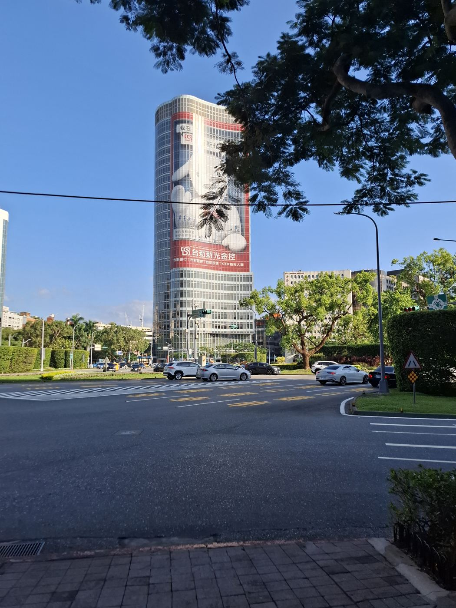
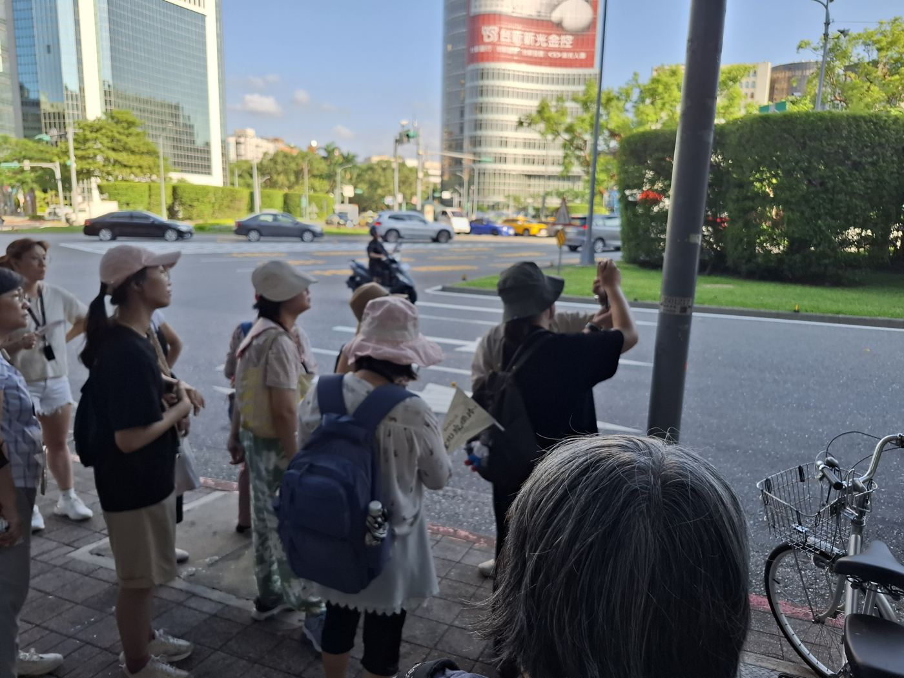
第 13 站
雙聖冰淇淋與誠品敦南
敦化南路・仁愛路口｜約 15:49–15:58
- 轉角的雙聖（Swensen's）1948 年在美國創立，1984 年引進台灣，2016 年暫停營業。最有名的是美式早餐的咖啡無限續杯：倒小杯、喝完再續，冬天也不會冷掉。創辦人 1992 年還曾來過這家店。
- 這棟大樓（今國泰世華銀行仁愛分行）就是最早的誠品書店：只有一樓和地下室，中間挖空一塊樓板，賣書也賣法國電影海報，入口就在今天種樹的轉角。許多日後走紅的歌手出道前，週末就在門口路邊唱歌。
- 原址要都更時，剛上任的市長陳水扁陪同拜訪新光集團，留下「台北不缺百貨公司，但不能沒有誠品」這句話，誠品因此搬進隔壁大樓，也就是後來的誠品敦南；營業到半夜後發現有需求，就變成了 24 小時書店。
- 誠品敦南熄燈時，Hally 受日本雜誌《Subsequence》邀稿，以「Sleepless in Taipei」為題，記錄這個不夜城文化的落幕：東區因它而起，也因它而落。
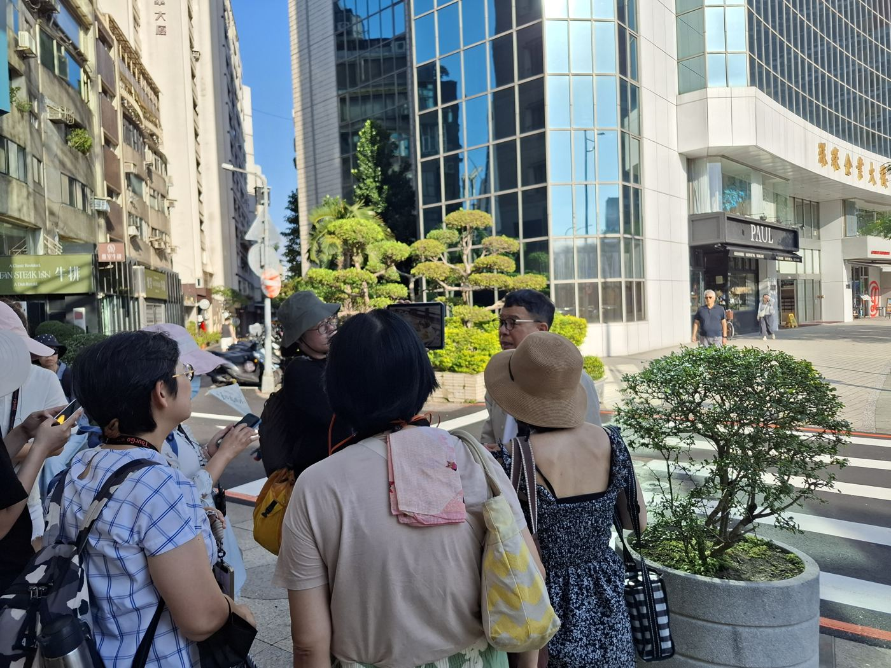
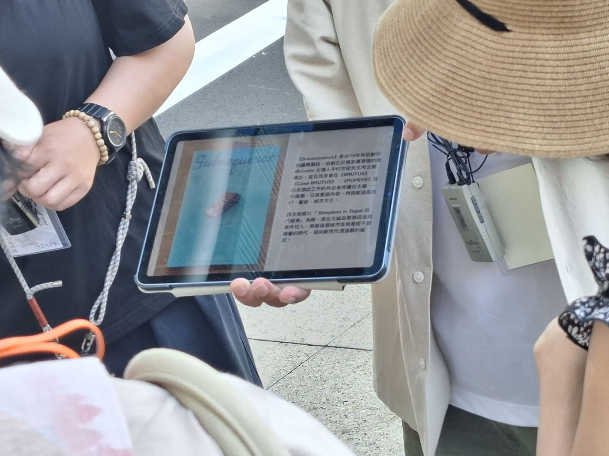
第 14 站
敦化南路的林蔭步道
敦化南路安全島｜約 15:58–16:10
- 中間這條步道其實是安全島，功能一變再變：早期是噴水池（和國門大道一樣），因為耗水耗電而拆除；十年前改成可以從機場一路騎過來的自行車道；現在是步道。
- 對面老爺大廈曾是老爺酒店，規模小但非常雅致；旁邊玻璃帷幕一樓曾是新學友書店，附近學生都在那裡買文具。
- 敦化南路分三次才開通：一開始只拓寬到仁愛路圓環，後來才往南延伸；中間有一段因為林家古厝卡住，古厝後來遷到花博公園美術館附近，路才打通。
- 走讀在這裡告一段落，接著前往主辦方安排的場地——一間設計感十足、要有指引才找得到入口的藥局空間，進行「共創 × 分享」：每個人在回饋卡上畫下今天印象最深的畫面，交流一路上的觀察。
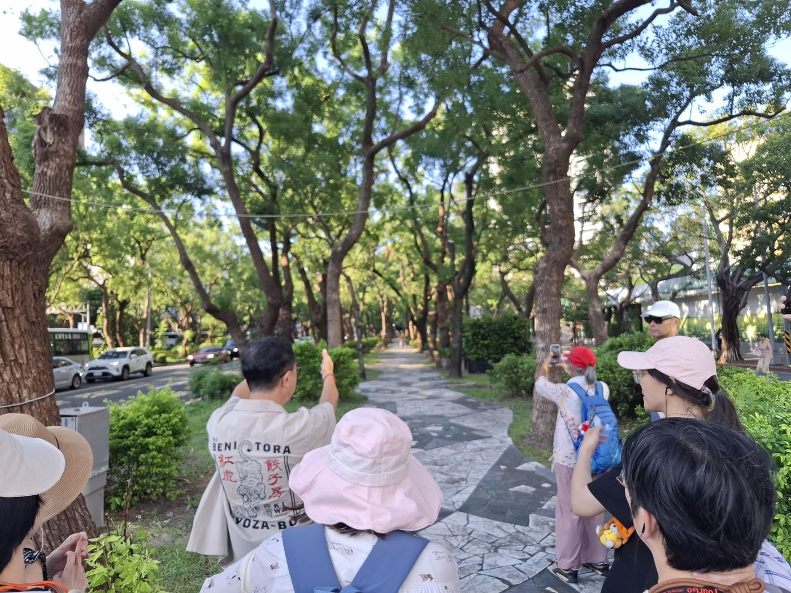
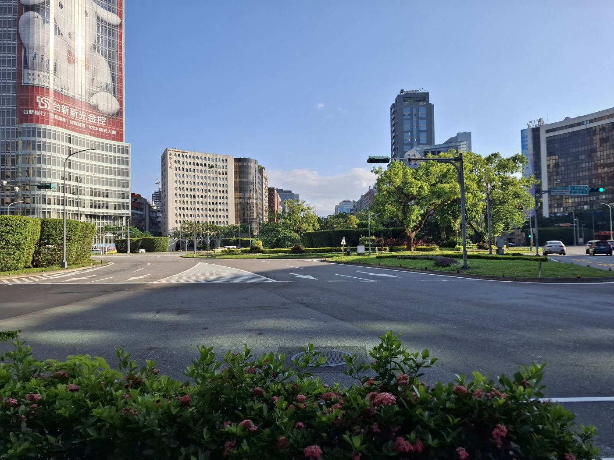
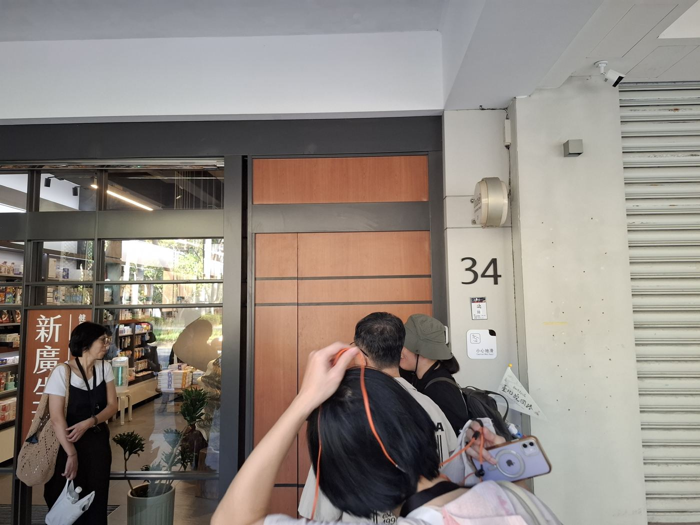